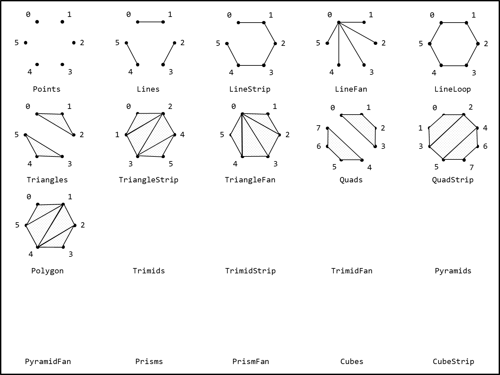

Sequence
Besides Building Blocks, Buffer4 has another concept called Sequence.
To access this feature, make sure the script header contains:
using Engine4.Internal; // Sequencer (and other tools) is an extension method inside this namespace
Example
Suppose you want to create a looping lines that connects 20 vertices.
public override void CreateModel(Buffer4 buffer)
{
for(int i = 0; i < 20; i++)
buffer.AddVertex(new Vector4(i,0,0,0)); // create vertex
for(int i = 0; i < 20; i++)
buffer.AddSegment(i, (i + 1) % 20); // clever, doesn't it?
}
Instead of loop, you can simplify the segment creation with a single line.
buffer.Sequence(SequenceMode.LineLoop); // cool!
This is one of many sequencing presets.

Grid Sequence
With GridSequence Creating grid based model become a lot easier.
public override void UploadBuffer(Buffer4 buffer) // creating tesseract
{
for(int x = -1; x <= 1; x+=2)
for(int y = -1; y <= 1; y+=2)
for(int z = -1; z <= 1; z+=2)
for(int w = -1; w <= 1; w+=2)
buffer.AddVertex(new Vector4(x,y,z,w)); // create vertex
buffer.SequenceGrid(2, 2, 2, 2); // Done!
}
Direct Sequence
C# have params which in turn gives power for lazy developers to get things done beautifully. In another words, this allows you to call multiple AddXXX() in single call.
public override void UploadBuffer(Buffer4 buffer) // Read from mesh
{
Mesh mesh = GetComponent<MeshFilter>().sharedMesh; // get mesh
buffer.AddVertex(Array.Convert(mesh.vertices, (v) => (Vector4)v)); // push vertices
buffer.AddTriangle(mesh.triangles); // push triangles
}
If these building blocks doesn't fit to your case, you can directly sequence over params by calling AddBySequence.
buffer.AddBySequence(SequenceMode.LineLoop, a, b, c, d, e, f, g, h, x, x, x); // Do whatever you like to do
Note
While params usage may impacting performance, it actually doesn't. In most cases Modeler4 only be called [once] per scene lifetime.